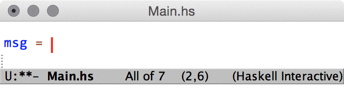

Next: Unicode support, Previous: Getting Started, Up: Top [Index]
Haskell Mode is actually a collection of so-called major
modes1 one of which is called
haskell-mode. To avoid confusion, when referring to this package
the name “Haskell mode” is written in a normal font, whereas when
referring the major mode of the same name haskell-mode written
with a dash in-between in a typewriter font is used.
As one might guess, haskell-mode is the (programming
language2)
major mode for editing (non-literate) Haskell source
code. haskell-mode is associated with the file extensions listed
below by default3.
official file extension for (non-literate) Haskell 98/2010 files
“almost-Haskell” input file for the hsc2hs pre-processor
input file for the cpphs pre-processor
The major mode literate-haskell-mode (which is derived from
haskell-mode and thus transitively from prog-mode)
provides support for
literate
Haskell programs and is associated with the .lhs file extension
by default.
literate-haskell-mode supports Bird-style as well as TeX-style
literate Haskell files. The currently detected literate Haskell variant
is shown in the mode line (see (emacs)Mode Line) as either
‘LitHaskell/bird’ or ‘LitHaskell/tex’.
haskell-mode supports syntax highlighting via Emacs’ Font
Lock minor mode which should be enabled by default in current
Emacsen. See (emacs)Font Lock, for more information on how to
control font-lock-mode.
Syntax highlighting facilities parse strings and string escape sequences and are able to highlight unrecognized constructs.
There are a few functions for managing imports.
To jump to your import list, run
M-x haskell-navigate-imports
It’s nicer to have a keybinding to do this, for example:
(define-key haskell-mode-map (kbd "<f8>") 'haskell-navigate-imports)
You can hit it repeatedly to jump between groups of imports. It will cycle.
To generally format (sort, align) your imports, you can run
M-x haskell-mode-format-imports
Or C-c C-..
To just sort imports, jump to an import section and run
M-x haskell-sort-imports
To just align imports, jump to an import section and run
M-x haskell-align-imports
As an alternative to the elisp functions described above, haskell-mode
can use the program stylish-haskell
to format imports. You can set this behavior by typing: M-x
customize-variable RET haskell-stylish-on-save. You can
install stylish-haskell by running stack install
stylish-haskell, or if you have not installed stack,
cabal install stylish-haskell.
haskell-mode can complete symbols, pragma directives and language
extensions. This is part of haskell-interactive-mode.

If haskell-interactive-mode is enabled and working haskell mode provides completions for import statements taking into account currently loaded and available packages.

When profiling code with GHC, it is often useful to add
cost centres by hand. These allow finer-grained information about
program behavior. haskell-mode provides the function
haskell-mode-toggle-scc-at-point to make this more convenient.
It will remove an SCC annotation at point if one is present, or add
one if point is over whitespace. By default it is bound to C-c C-s.
for more information about the concept of major modes see (emacs)Major Modes
haskell-mode is derived from prog-mode
for more information about file associations, see (emacs)Choosing Modes
Next: Unicode support, Previous: Getting Started, Up: Top [Index]